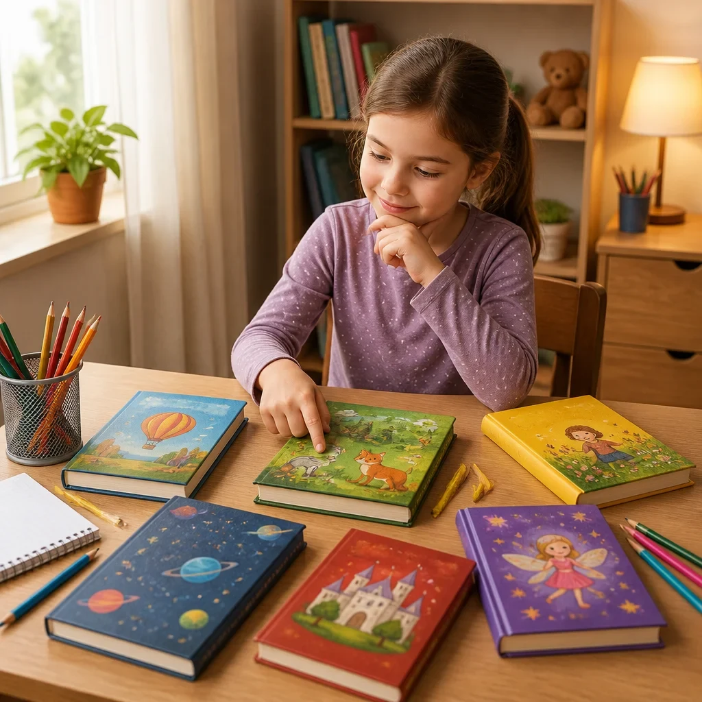
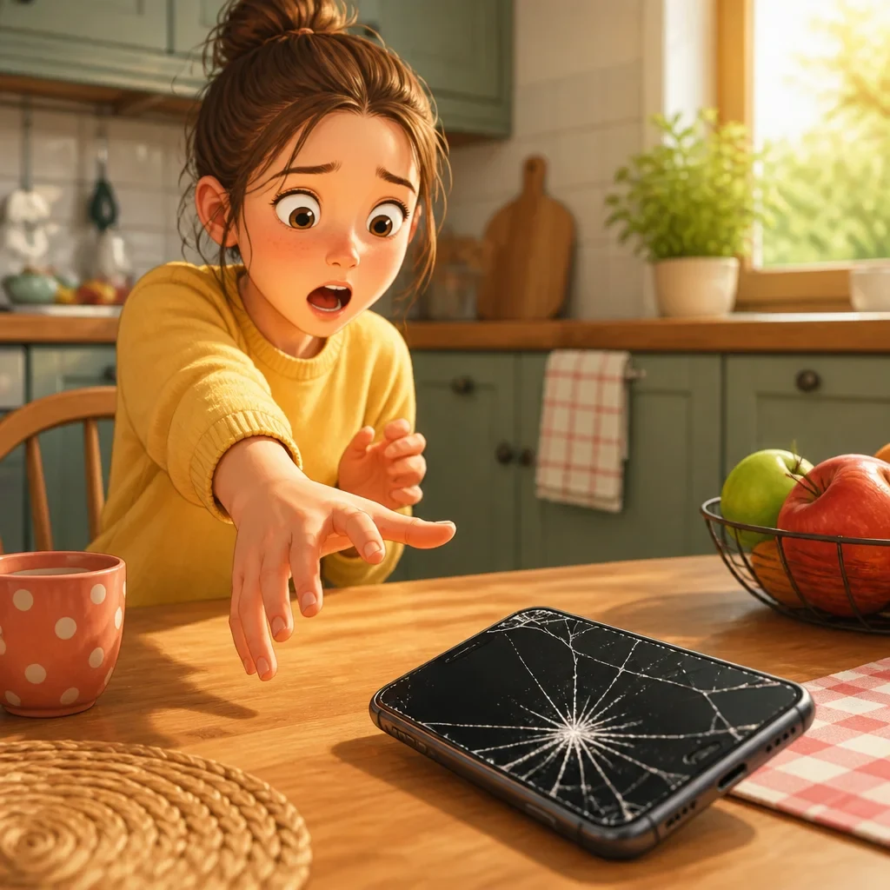
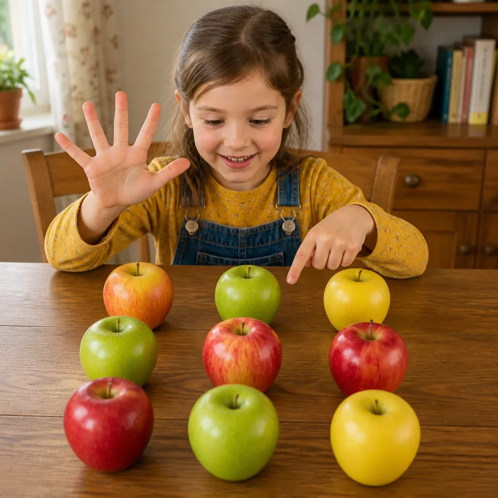
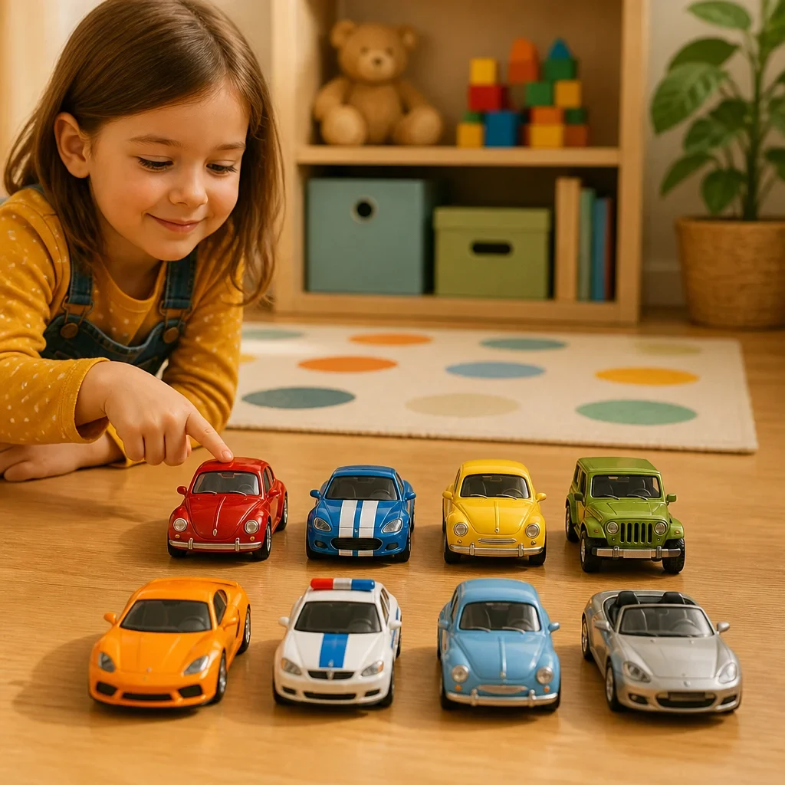
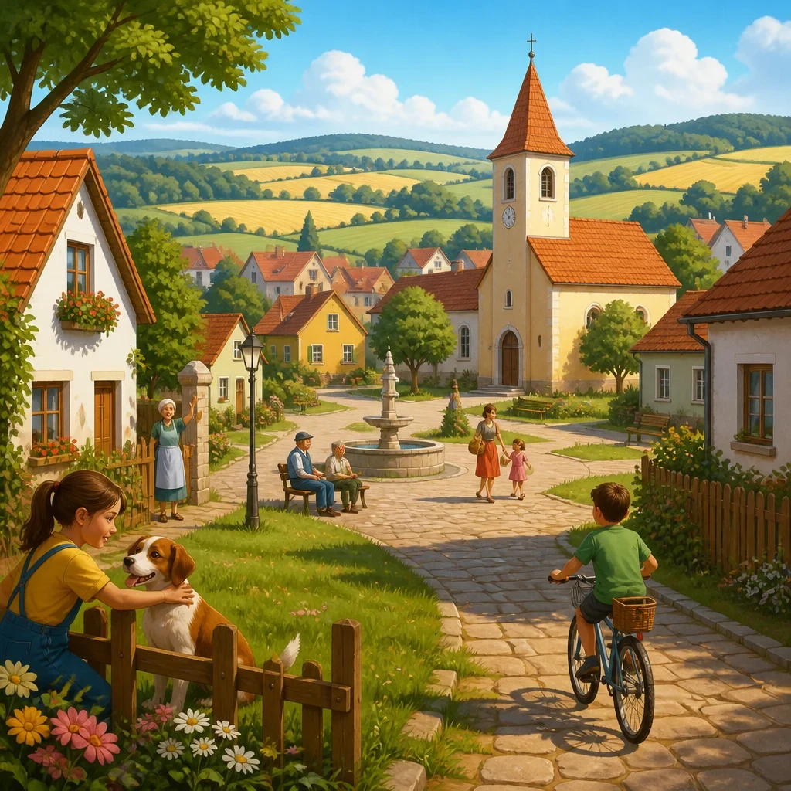
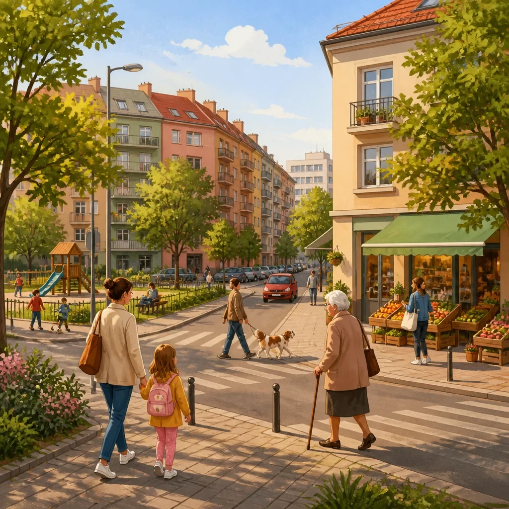
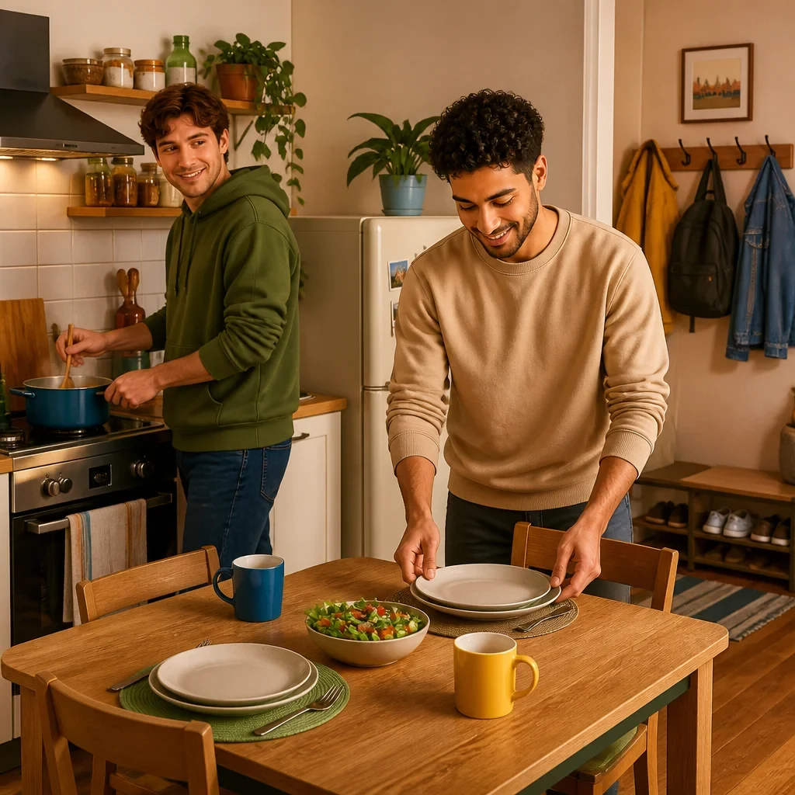
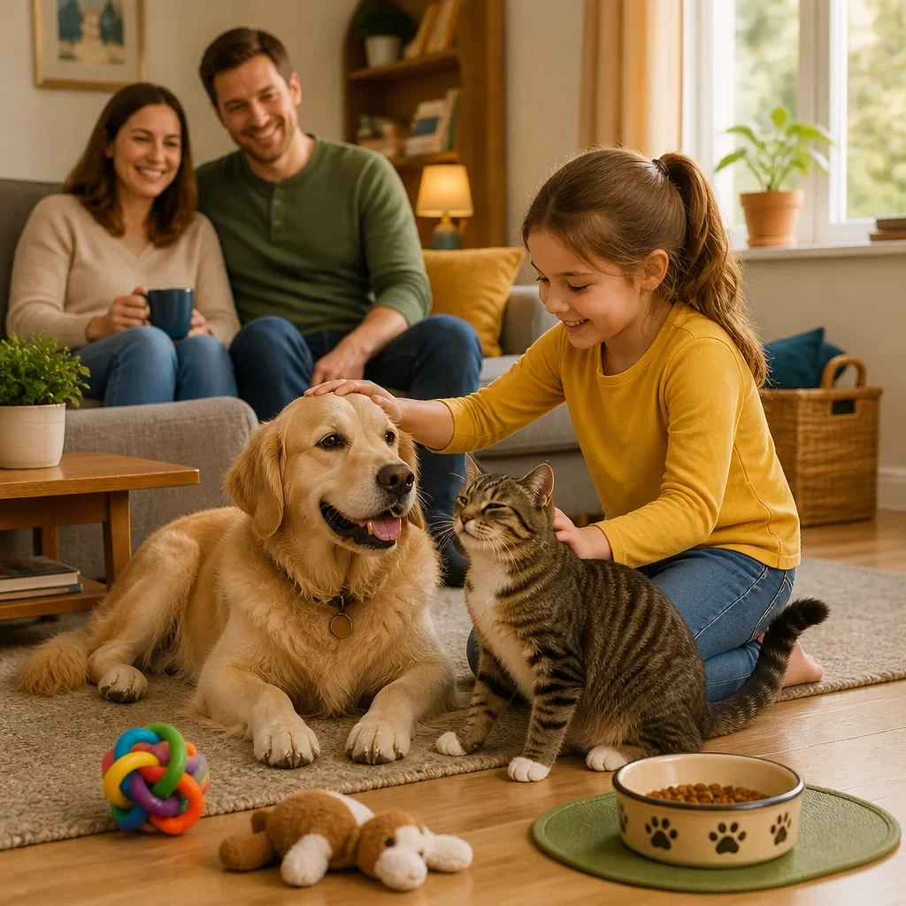

| Preview | File | Size | Words | Czech meanings | Status |
|---|---|---|---|---|---|
lit.webp |
90.5 kB | lit | postel | generated | |
nuit.webp |
81.7 kB | nuit | noc | generated | |
 |
plusieurs.webp |
145.2 kB | plusieurs | několik, více | generated |
 |
rotto.webp |
98.3 kB | rotto | rozbitý | generated |
 |
nove.webp |
111.4 kB | nove | devět | generated |
 |
otto.webp |
113.6 kB | otto | osm | generated |
carta_di_credito.webp |
105.8 kB | carta di credito | kreditní karta | generated | |
 |
paese.webp |
233.4 kB | paese | země; stát; vesnice; obec; kraj podle kontextu | generated |
 |
quartiere.webp |
238.1 kB | quartiere | čtvrť, městská část | generated |
albero.webp |
283.0 kB | albero | strom | generated | |
 |
coinquilino.webp |
152.0 kB | coinquilino | spolubydlící | generated |
 |
animale_domestico.webp |
155.5 kB | animale domestico | domácí zvíře | generated |